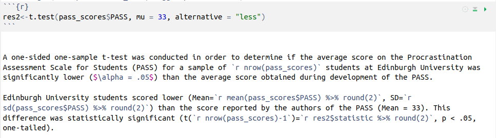

survey_data <-
read_csv("https://uoepsy.github.io/data/surveydata_allcourse22.csv")Week 4 Exercises: Chi-Square Tests
Birth-Months
Research Question: Are people more likely to be born in certain months than others?
As you may remember, in the survey we asked students to complete in welcome week, one of the questions concerned the month in which you were born. You can download the data from https://uoepsy.github.io/data/surveydata_allcourse22.csv.
Question 1
What is your intuition about the distribution of all students’ birth-months?
Do you think they will be spread uniformly across all months of the year (like a fair 12-sided dice), or do you think people are more likely to be born in certain months more than others?
Plot the distribution and get an initial idea of how things are looking.
Hint:
You can do this quickly with barplot() and table(), or you could create try using ggplot() and looking into geom_bar().
Question 2
We’re going to perform a statistical test to assess the extent to which our data conforms to the hypothesis that people are no more likely to be born on one month than another.
Under this hypothesis, what would be the proportional breakdown of observed births in each of the months?
Question 3
We can find out how many people have valid entries (i.e. not NA) in the birth-month variable:
sum(!is.na(survey_data$birthmonth))[1] 405Given this information, how many observations would we expect to find with a birthday in January? And in February? … and so on?
Question 4
The code below creates counts for each month. Before doing that, it removes the rows which have an NA in them for birthmonth:
survey_data %>%
filter(!is.na(birthmonth)) %>%
group_by(birthmonth) %>%
summarise(
observed = n()
)(A shortcut for this would be survey_data %>% filter(!is.na(birthmonth)) %>% count(birthmonth))
Add to the code above to create columns showing:
- the expected counts \(E_i\)
- observed-expected (\(O_i - E_i\))
- the squared differences \((O_i - E_i)^2\)
- the standardised square differences \(\frac{(O_i - E_i)^2}{E_i}\)
Then calculate the \(\chi^2\) statistic (the sum of the standardised squared differences).
If your observed counts matched the expected counts perfectly, what would the \(\chi^2\) statistic be?
Hint: This was all done in the manual example of a \(\chi^2\) test in 4A #chi2-goodness-of-fit-test
Question 5
You can see the distribution of \(\chi^2\) statistics with different degrees of freedom below.

We can find out the proportion of the distribution which falls to either side of a given value of \(\chi^2\) using pchisq(). We need to give it our calculated \(\chi^2\) statistic, our degrees of freedom (df), which is equal to the number of categories minus 1. We also need to specify whether we want the proportion to the left (lower.tail=TRUE) or to the right (lower.tail=FALSE).
- Using
pchisq(), calculate the probability of observing a \(\chi^2\) statistic as least as extreme as the one we have calculated.
- Check that these results match with those provided by R’s built-in function:
chisq.test(table(survey_data$birthmonth))(thetablefunction will ignore NAs by default, so we don’t need to do anything extra for this).
Question 6
Which months of year had the highest contributions to the chi-square test statistic?
Hint: Think about your standardised squared deviations.

Eye-Colours
Research Question: Do the proportions of people with different eye-colours correspond to those suggested by the internet?
According one part of the internet (that reliable source of information!), 76% of people in the world have brown eyes, 10% have blue, 5% hazel, 5% amber, 2% green, 1% grey, and 1% have some other eye colouring (red/violet/heterochromia).
We’ll use the same data from the course survey’s here:
survey_data <-
read_csv("https://uoepsy.github.io/data/surveydata_allcourse22.csv")
Question 7
Perform a \(\chi^2\) goodness of fit test to assess the extent to which our sample of students conform to this theorised distribution of eye-colours.
No need to do this manually - once is enough. Just go straight to using the chisq.test() function.
Hint: Try using chisq.test(..., p = c(?,?,?,...) ).
We saw this in the example goodness of fit test, 4A #example
Question 8
What are the observed proportions of our sample with each eyecolour?
Can you figure out how to use the prop.table() function?

Jokes and Tips
Data: TipJokes
Research Question: Can telling a joke affect whether or not a waiter in a coffee bar receives a tip from a customer?
A study published in the Journal of Applied Social Psychology1 investigated this question at a coffee bar of a famous seaside resort on the west Atlantic coast of France. The waiter randomly assigned coffee-ordering customers to one of three groups. When receiving the bill, one group also received a card telling a joke, another group received a card containing an advertisement for a local restaurant, and a third group received no card at all.
The data are available at https://uoepsy.github.io/data/TipJoke.csv.
The dataset contains the variables:
Card: None, Joke, Ad.Tip: 1 = The customer left a tip, 0 = The customer did not leave tip.
Question 9
Produce a plot and a table to display the relationship between whether or not the customer left a tip, and what (if any) card they received alongside the bill.
Don’t worry about making it all pretty. Mosaic plots in R are a bit difficult.
Hint:
plot(table(...)) will give you something. You can see one in the example \(\chi^2\) test of independence,4A #example-1.

Question 10
What would you expect the cell counts to look like if there were no relationship between what the waiter left and whether or not the customer tipped?
Question 11
Just like we gave the chisq.test() function a table of observed frequencies when we conducted a goodness of fit test in earlier exercises, we can give it a two-way table of observed frequencies to conduct a test of independence.
Try it now.
Some RMarkdown
For one of the \(t\)-tests we saw in the previous week’s exercises, we can use an RMarkdown document in which we write our results so that they get compiled to look nice and pretty:
Writing this

Compiles to this
A one-sided one-sample t-test was conducted in order to determine if the average score on the Procrastination Assessment Scale for Students (PASS) for a sample of 20 students at Edinburgh University was significantly lower (\(\alpha = .05\)) than the average score obtained during development of the PASS.
Edinburgh University students scored lower (Mean = 30.7, SD = 3.31) than the score reported by the authors of the PASS (Mean = 33). This difference was statistically significant (t(19)=-3.11, p < .05, one-tailed).
This is one of the huge benefits of RMarkdown. Imagine we collected more data - we wouldn’t have to edit all the results, we could simply recompile and they would update for us!
Note how it works:
- the code chunk saves the results of the
t.test()function as a named objectres2. - in text, the backticks
`r … … … `are used to execute small bits of R code, and include the output within the text. For instance, the line`r res2$statistic %>% round(2)`gets the t-statistic from the results, and rounds it to 2 decimal places, which get’s printed out as -3.11. - the bits between the dollar signs, e.g. $\alpha$ will get printed as mathematical symbols such as \(\alpha\).
RMarkdown documents are self-contained.
You need to to put everything that is needed to reproduce your analysis in the correct order.
For instance, if you have used the console (bottom left window) to define an object peppapig <- 30, you will have an object in your environment (top right window) called “peppapig” which has the value 30.
If you were to refer to that object in your RMarkdown document, you will be able to run a line of code such as peppapig/10 because it will find the “peppapig” object in your environment. BUT you won’t be able to compile the document because it “starts fresh” (i.e., compiles within its own environment). In order for it to compile, you would need to define what “peppapig” is inside your document, and before the document then refers to it.
The same applies with using functions in from packages. The RMarkdown document needs to know what packages to load before it uses functions from them. Just because you yourself have loaded a package in your session, it does not mean the compilation process for your RMarkdown has access to it.
If you want some extra explanations on these aspects of RMarkdown, then please see Lessons 0-3 of our Rmd-bootcamp.
Question 12
Can you create an RMarkdown document which:
- Reads in the https://uoepsy.github.io/data/TipJoke.csv data.
- Conducts and reports a \(\chi^2\) test of independence examining whether telling a joke affect whether or not a waiter in a coffee bar receives a tip from a customer.
- Successfully compiles (“knits”) into an .html file.
Footnotes
Gueaguen, N. (2002). The Effects of a Joke on Tipping When It Is Delivered at the Same Time as the Bill. Journal of Applied Social Psychology, 32(9), 1955-1963.↩︎